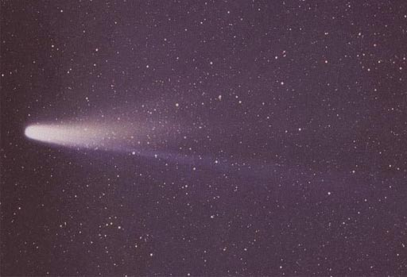
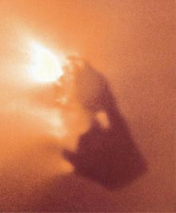

Halley's Comet

Credit: Comet Halley as taken March 8, 1986 by W. Liller, Easter Island, part of the
International Halley Watch (IHW) Large Scale Phenomena Network.
The comet named after British astronomer Edmund Halley is arguably the most famous of all comets, having been observed in 1531, 1607, 1682, 1758, 1834 ,1910 and 1986. Halley entered the picture in 1705, realizing that the appearance of 1682 was the same comet as those observed on the previous two dates listed above. Surmising that the comet was following the same laws which governed planetary orbits, he calculated the orbit corresponding to a 76 year period and predicted its return in 1758. Though he did not live to see it, the return of the comet in 1758 was a triumph for orbit calculations based on Newton's laws and led to the naming of the comet after Halley. Subsequent to Halley's analysis, historical research showed that Halley's comet had been observed at every passage since 240 BC.
|

|
Nucleus of Halley's Comet
With such a long history of observations, we were well prepared for Halley's 1986 visit. The Soviet spacecraft Vega 2 traveled through the comet's coma, passing within 8000 km of the nucleus. With data obtained from that encounter, spacecraft Giotto was navigated to within 600 km of the nucleus and obtained our first direct images of a comet nucleus. Giotto's images showed the nucleus to be an irregular object, something like a potato, with dimensions 15 km long and up to 10 km wide. If the common "dirty snowball" view applies at all, this was a very dirty one, appearing almost jet black. The visible jets coming from the dark nucleus were not uniform, but emanated from several small vents on the sunlit side. These vents could actually produce measurable changes in the comet's orbit, and were our first clue about the origin of observed small departures of comet orbits from Kepler's laws.
|
|
Index
Solar System Illustration
Solar System Concepts
Reference
Chaisson & McMillan,
Ch 14. |